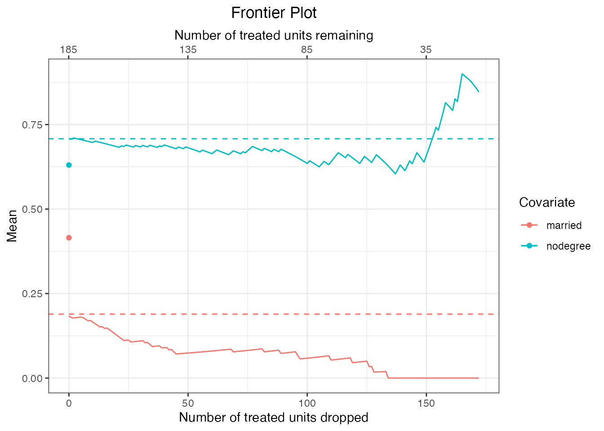

MatchingFrontier
Noah Greifer
2022-09-29
Source:vignettes/MatchingFrontier.Rmd
MatchingFrontier.RmdIntroduction
Matching methods have become extremely popular among researchers working with observational data, especially when used as a nonparametric preprocessing step to reduce model dependence. But despite this popularity, existing matching approaches leave researchers with two fundamental tensions. First, they are often designed to maximize one metric (such as propensity score or Mahalanobis distance) but are judged against another for which they were not designed (such as the \(L_1\) statistic or differences in means). Second, they lack a principled solution to revealing the implicit bias-variance trade off: matching methods need to optimize with respect to both imbalance (between the treated and control groups) and the number of observations pruned, but existing approaches optimize with respect to only one; users then either ignore the second or tweak it without a formal stopping rule.
MatchingFrontier resolves both tensions by consolidating previous techniques into a single, optimal, and flexible approach. The software calculates the matching solution with maximum balance for each possible sample size (\(N\), \(N-1\), \(N-2\), …) and returns each solution, the whole of which constitute the frontier, from which the user can easily choose one, several, or all subsamples with which to conduct the final analysis, given their own choice of imbalance metric and quantity of interest. MatchingFrontier solves the joint optimization problem in one run, automatically, without manual tweaking, and without iteration. Although for each subset size \(k\), there exist a huge number of unique subsets (\(N \choose k\)), MatchingFrontier includes specially designed and extremely fast algorithms that give the optimal answer, usually in a few minutes or less.
General Framework
Matching methods are designed to reduce imbalance in data by selectively pruning and optionally pairing observations, which in turn reduces model dependence. However, pruning reduces sample size and therefore may increase variance in the eventual estimates. Users of matching are then confronted with the perennial bias-variance trade-off. Perhaps surprisingly, existing approaches to matching do not conduct the implied joint optimization of bias and variance. Rather, they improve one dimension of the optimization and leave the second to the user. Such an approach is time consuming and rarely yields the optimal solution. King, Lucas, and Nielsen (2017) proposes a solution to this joint optimization, which is implemented in MatchingFrontier. We point users of MatchingFrontier to King, Lucas, and Nielsen (2017) for algorithmic details and theoretical proofs.
Frontiers depend on the imbalance metric used. MatchingFrontier includes the average Mahalanobis metric and L1 statistic described in King, Lucas, and Nielsen (2017), as well as a more recently developed metric known as the energy distance, developed by Székely and Rizzo (2013) and described by Huling and Mak (2020) for use in comparing distributions in observational studies. Other metrics are available as well, creating three classes of frontiers that correspond to a given imbalance metric and matching method; these include pair distance-based frontiers, bin-based frontiers, and energy distance-based frontiers.
Estimated effects generalize to different target samples depending on how the matching is performed. In MatchingFrontier, the user can choose the estimand, i.e., the effect corresponding to the group to which the effect is meant to generalize, from among the following choices:
The sample average treatment treatment effect (SATE), the average effect of treatment in the entire sample.
The feasible sample average treatment effect (FSATE), the average effect of treatment in the sample remaining after some units from both groups are dropped.
The sample average treatment effect in the treated (SATT), the average effect of treatment in the sample of those who were treated.
The feasible sample average treatment effect in the treated (FSATT), the average effect of treatment in the sample of treated units after some treated units are dropped.
Choosing between SATE and SATT will depend on the research question of interest; see Greifer and Stuart (2021) for guidance on making this choice. When estimating these effects would require extrapolation, e.g., because of poor overlap between the treatment groups, their “feasible” versions might be considered instead (King, Lucas, and Nielsen 2017; Iacus, King, and Porro 2019), which correspond to the effect of treatment for an overlap sample not specified prior to the analysis.
Below, we describe the different frontiers available and which quantities of interest (i.e., estimand) each can target.
Pair distance-based frontiers
Pair distance-based frontiers involve a first step of pairing observations based on the distances between them (i.e., using 1:1 or k:1 matching), and the frontier is formed by discarding one pair at a time until none remain, similar to applying a tighter and tighter caliper. The imbalance metric is the average of the pairwise distances of the remaining units. When pair distance-based metrics are equal to zero, the remaining units comprise pairs of units identical on the included covariates. Pairing is done with replacement, so each unit can be used as a pair to multiple other units. The distance between units used to form the pairs and compute the imbalance metric can be computed as the Mahalanobis distance, the Euclidean distance on the scaled or original covariates, or a user-supplied distance.
These frontiers can only be used when the quantity of interest is the FSATE or FSATT. For the FSATE, each treated unit is paired with a control unit, and each control unit is paired with a treated unit; these processes are independent so a control unit may not be paired with the treated unit it is paired to. Each pair can be thought of as a single-headed arrow pointing from the focal unit to its paired unit; pairs are not bi-directional (except by chance). The effect estimated after the initial match (prior to dropping any units) corresponds to the SATE; once any units are dropped, the estimand corresponds to the FSATE. For the FSATT, each treated unit is paired with a control unit (i.e., arrows emanate from treated units but not from control units), and the frontier is formed by dropping treated units. The effect estimated after the initial match (prior to dropping any units) corresponds to the SATT; once any units are dropped, the estimand corresponds to the FSATT.
Bin-based frontiers
Bin-based frontiers involve assigning units into bins based on the unique combination of their coarsened covariates. The frontier is formed by dropping one unit at a time, in particular, the unit that when dropped would yield the greatest decrease in the imbalance metric. Unlike pair distance-based frontiers, bin-based frontiers are formed by subset selection rather than pairing; units are not paired with each other, and the initial point of the frontier is computed on the unmodified sample (in contrast to pair distance-based frontiers, where the initial point is computed after pairing). Bin-based frontiers can be thought of as a close relative to coarsened exact matching (Iacus, King, and Porro 2012), as implemented in the cem and MatchIt packages (i.e., using matchit() with method = "cem"). (In general, it makes more sense to perform coarsened exact matching than to create a bin-based frontier because all points along the frontier will have worse balance than the result of a coarsened exact match (King, Lucas, and Nielsen 2017); bin-based frontiers are provided here largely for comparison purposes.)
The available imbalance metrics for bin-based frontiers include the \(L_1\) and \(L_2\) statistics, which summarize the discrepancy between the relative proportions of treated and control units in each bin (King, Lucas, and Nielsen 2017) and are computed as
\[ L_1(H)=\frac{1}{2}\sum_{(\ell_1\dots\ell_k)\in H}{|f_{\ell_1\dots\ell_k}-g_{\ell_1\dots\ell_k}|} \]
and
\[ L_2(H)=\frac{1}{2}\sqrt{\sum_{(\ell_1\dots\ell_k)\in H}{(f_{\ell_1\dots\ell_k}-g_{\ell_1\dots\ell_k})^2}} \]
where \(H\) is a vector of the number of bins for the covariates, \(\ell_1 \dots\ell_k\) are the strata formed by applying the bin boundaries to the covariates, and \(f_{\ell_1 \dots\ell_k}\) and \(g_{\ell_1 \dots\ell_k}\) are the proportion of treated and control units, respectively, in each stratum. The number of bins to use for each covariate can be chosen by the user or computed automatically as the number of bins that yield the median value of the imbalance metric across a random sample of binnings in the full sample, thereby removing the dependence of the frontier on a specific choice by the user (Iacus, King, and Porro 2011).
These frontiers can be used when the quantity of interest is the FSATE or SATT. For the FSATE, units are dropped one at a time. Units will be dropped from the bins with the largest treatment group imbalance (i.e., so units with no members of the other bin will be dropped first). For the SATT, only control units can be dropped; all treated units will remain, even if no control units share a bin with them.
Energy distance-based frontiers
Like bin-based frontiers, energy distance-based frontiers involve subset selection rather than pairing. The frontier is formed by dropping one unit at a time, in particular, the unit that when dropped would yield the greatest decrease in the imbalance metric. The imbalance metric is the energy distance, a scalar measure of the difference between two multivariate cumulative density functions (Rizzo and Székely 2016; Székely and Rizzo 2013), computed as: \[ \mathcal{E}(\mathbf{X}_1,\mathbf{X}_2) = 2 D_{12} - D_{11} - D_{22} \] where
\[\begin{align} D_{12}&=\frac{1}{N_1 N_2}\sum_{i \in \mathcal{X}_1}{\sum_{j \in \mathcal{X}_2}{||X_{1i}-X_{2j}||_2}} \\ D_{11} &= \frac{1}{N_1^2}\sum_{i \in \mathcal{X}_1}{\sum_{i' \in \mathcal{X}_1}{||X_{1i}-X_{1i'}||_2}} \\ D_{22} &= \frac{1}{N_2^2}\sum_{j \in \mathcal{X}_2}{\sum_{j' \in \mathcal{X}_2}{||X_{2j}-X_{2j'}||_2}} \end{align}\]
and where \(\mathcal{X}_1\) and \(\mathcal{X}_2\) are two samples of size \(N_1\) and \(N_2\) of (scaled) variables \(\mathbf{X}_1\) and \(\mathbf{X}_2\), respectively, and \(||.||_2\) is the \(L_2\)-norm (i.e., Euclidean distance). At each point on the frontier, each unit’s contribution to the energy distance is computed as the difference between the energy distance with it included and that with it dropped, and the unit with the greatest contribution is dropped. Energy-distance based frontiers can be thought of as a greedy, nonsmooth version of Huling and Mak’s (2020) energy balancing, which estimates weights that directly minimize the energy distance in the weighted sample. The energy distance-based frontier can be useful when weights other than 0 or 1 are undesirable or the optimization required for energy balancing is intractable. Unlike pair distance-based frontiers, the energy distance-based frontier is non-monotonic; there is often a point when discarding additional units increases rather than decreases the imbalance metric.
Energy distance-based frontiers can be used when the quantity of interest is the SATE, FSATE, or SATT, making them highly versatile. For the SATE, the energy distance is computed as Huling and Mak’s (2020) “improved” energy distance, which is the sum of the energy distance between the treated group and the original full sample, the energy distance between the control group and the full sample, and the energy distance between the treated and control groups. Units from either group may be dropped. As the energy distance decreases, the resulting groups each increasingly resemble the full sample and each other. For the FSATE and SATT, the energy distance is computed only between the treated and control groups (ignoring the distance from the full sample), and for the SATT, only control units can be dropped.
Using MatchingFrontier
Here, we provide a basic guide on using MatchingFrontier to compute a balance-sample size frontier. We will use Lalonde’s (1986) data on the evaluation of the National Supported Work program to demonstrate MatchingFrontier’s capabilities. This dataset is stored in the MatchIt package (Ho et al. 2011), which is automatically installed alongside MatchingFrontier.
First, we load MatchingFrontier and the lalonde dataset from MatchIt.
library("MatchingFrontier")
data("lalonde", package = "MatchIt")
head(lalonde)## treat age educ race married nodegree re74 re75 re78
## NSW1 1 37 11 black 1 1 0 0 9930.0460
## NSW2 1 22 9 hispan 0 1 0 0 3595.8940
## NSW3 1 30 12 black 0 0 0 0 24909.4500
## NSW4 1 27 11 black 0 1 0 0 7506.1460
## NSW5 1 33 8 black 0 1 0 0 289.7899
## NSW6 1 22 9 black 0 1 0 0 4056.4940The statistical quantity of interest is the causal effect of the treatment (treat) on 1978 earnings (re78). The other variables are pre-treatment covariates. See help("lalonde", package = "MatchIt") for more information on this dataset. The original focus with this dataset was to estimate the average treatment effect in the treated (SATT), which corresponded to the effect estimated in the accompanying randomized trial.
The typical workflow for using Matchingfrontier is the following. First, the user computes the balance-sample size frontier corresponding to the chosen quantity of interest (i.e., estimand) and imbalance metric; then, the frontier is visualized in a plot. The user can then estimate treatment effects at each point along the frontier or choose a single point on the frontier on which to estimate the effect.
Computing the frontier
We start by selecting the quantity of interest and imbalance metric. For now, we will consider the FSATT. Several imbalance metrics can be used with this estimand; here, we use the average Mahalanobis imbalance. Below, we call makeFrontier() with the desired arguments.
mahal.frontier <- makeFrontier(treat ~ age + educ + race + married +
nodegree + re74 + re75,
data = lalonde,
QOI = "FSATT",
metric = "dist",
verbose = FALSE)There are a few ways to specify the arguments to makeFrontier(); see help("makeFrontier") for details. Here, we used the formula interface, which requires a model formula of the form A ~ X1 + X2 + ... where A corresponds to the treatment and X1 and X2 are the pre-treatment covariates. We must also supply a dataset to the data argument. Note that no model is being fit here; the model formula serves to indicate which variable is the treatment and which are the covariates. The QOI (i.e., quantity of interest) argument corresponds to the desired estimand; here, we select the FSATT, but others are available depending on the type of frontier, as described previously. The metric argument corresponds to the imbalance metric used. Here, we entered "dist" to request the average pairwise distance between matched units be used; by default the pairwise distance is computed as the Mahalanobis distance.
The frontier is stored in the matchFrontier object, which we have called mahal.frontier. Printing mahal.frontier provides a summary of the type of frontier and its components:
mahal.frontier## A matchFrontier object
## - quantity of interest: FSATT
## - imbalance metric: average pairwise distance
## - treatment: treat
## - covariates: age, educ, race, married, nodegree, re74, re75
## - number of points: 154Plotting the frontier
Now that we have computed the frontier, we plot the frontier using plot.matchFrontier() to visualize the relationship between the number of units dropped and the imbalance metric.
plot(mahal.frontier)The plot indicates a monotonic negative relationship between the number of units dropped and the average Mahalanobis imbalance. The lower x-axis corresponds to the number of units dropped, and the upper x-axis corresponds to the number of units remaining. Here these sample sizes refer only to the number of treated units dropped or remaining because our quantity of interest is the FSATT. Control units are not counted in this plot because they will be dropped along the with the treated unit they are paired with.
We can use summary() on the matchFrontier object to reveal information about the beginning and end of the frontier.
summary(mahal.frontier)## Summary of matchFrontier object:
##
## N treated N control N total Statistic
## Start 185 185 0.7535
## End 13 13 0.0000
## Best 13 13 0.0000
## ^From the plot and summary we can see that the initial average Mahalanobis imbalance after matching but before discarding any units was about .338. After dropping 172 treated units, the imbalance falls to 0 (i.e., indicating that the remaining units are exactly matched on all the covariates). Dropping this many units has left us with only about 13 pairs remaining, which is typically far too few to make valid inferences on. Thus, the ideal sample lies somewhere between the beginning and end of the frontier. We can further examine the imbalance at specific intermediate points along the frontier by supplying an argument to N, which corresponds to the number of units remaining, or Ndrop, which corresponds to the number of units dropped:
## Summary of matchFrontier object:
##
## N treated N control N total Statistic
## At Ndrop = 40 145 145 0.4712
## At Ndrop = 60 125 125 0.3903
## At Ndrop = 80 105 105 0.3212
## At Ndrop = 100 85 85 0.2585
## At Ndrop = 120 65 65 0.1865
## ^
# summary(mahal.frontier, N = seq(65, 145, by = 20)) #same thingWe can also view information about balance for individual covariates using plot.matchFrontier(). To do so, we supply the names of individual covariates to the covs argument of plot.matchFrontier() and set stat = "std-diff" for standardized mean differences, which are useful for continuous covariates, and stat = "diff" for raw mean differences, which are useful for sets of variables that are on the same scale (like binary covariates).
#Standardized mean differences for continuous covariates
plot(mahal.frontier, covs = c("age", "educ", "re74"),
stat = "std-diff")
#Raw mean differences for categorical covariates
plot(mahal.frontier, covs = c("nodegree", "married"),
stat = "diff")
Here we can see that after an initial imbalance (the three dots on the left side of each plot), pairing has removed much imbalance immediately even without discarding additional units. However, balance can be improved on some covariates by continuing to drop pairs.
To view (standardized) means for each covariate, which allows us to see how the distribution of covariates in the estimation sample varies across the frontier, we can set stat = "std-mean" for standardized means and stat = "mean" for raw means. Using standardized means allows us to see how the standardized mean difference between the covariates in the estimation sample and the covariates in the target sample varies across the frontier; values close to zero indicate that the estimation sample strongly resembles the target sample. Using raw means allows us to see the actual location of the covariate means across the frontier (though make sure variables are on the same scale if multiple are to be included in the same plot!).
#Standardized means for continuous covariates
plot(mahal.frontier, covs = c("age", "educ", "re74"),
stat = "std-mean")
#Raw means for categorical covariates
plot(mahal.frontier, covs = c("nodegree", "married"),
stat = "mean")
We can see that for some covariates, the distribution in the remaining sample differs quite greatly from the target sample (i.e., the treated group because our quantity of interest is the FSATT). This is the sacrifice we make by pursuing the FSATT instead of the SATT. Estimates reflect the true SATT only to the extent that the covariate distributions in the remaining sample resemble those in the original treated group.
Extract a dataset from the frontier
We can estimate treatment effects at each point along the frontier or at a single point. First, we’ll demonstrate extracting a single dataset from the frontier and further examining it.
MatchingFrontier interfaces with MatchIt to use the balance assessment and reporting capabilities of MatchIt and provide a simple, well-documented workflow for estimating effects after matching. See vignette("MatchIt", package = "MatchIt") for an introduction to using MatchIt. We can use the function frontier_to_matchit() to extract a matching specification at one point on the frontier and turn it into a MatchIt object as if it had resulted from a call to MatchIt::matchit(). We need to select the point along the frontier for which this extraction is desired, and this can be specified either based on the number of units dropped or the number of units remaining. Here, we’ll pick the point on the frontier with 100 units remaining (corresponding to dropping 85 units).
mahal.matchit <- frontier_to_matchit(mahal.frontier, N = 100)
#same thing: frontier_to_matchit(mahal.frontier, Ndrop = 85)Printing the new matchit object provides some information about it and indicates that it is indeed a matchit object.
mahal.matchit## A matchit object
## - method: 1:1 matching frontier (minimizing the average pairwise distance)
## - number of obs.: 614 (original), 143 (matched)
## - target estimand: ATT
## - covariates: age, educ, race, married, nodegree, re74, re75We can use summary() from MatchIt to assess balance on the covariates individually before and after matching, providing more detail than the original imbalance metric alone:
summary(mahal.matchit)##
## Call:
## makeFrontier(formula = treat ~ age + educ + race + married +
## nodegree + re74 + re75, data = lalonde, QOI = "FSATT", metric = "dist",
## verbose = FALSE)
##
## Summary of Balance for All Data:
## Means Treated Means Control Std. Mean Diff. Var. Ratio eCDF Mean eCDF Max
## age 25.8162 28.0303 -0.3094 0.4400 0.0813 0.1577
## educ 10.3459 10.2354 0.0550 0.4959 0.0347 0.1114
## raceblack 0.8432 0.2028 1.7615 . 0.6404 0.6404
## racehispan 0.0595 0.1422 -0.3498 . 0.0827 0.0827
## racewhite 0.0973 0.6550 -1.8819 . 0.5577 0.5577
## married 0.1892 0.5128 -0.8263 . 0.3236 0.3236
## nodegree 0.7081 0.5967 0.2450 . 0.1114 0.1114
## re74 2095.5737 5619.2365 -0.7211 0.5181 0.2248 0.4470
## re75 1532.0553 2466.4844 -0.2903 0.9563 0.1342 0.2876
##
##
## Summary of Balance for Matched Data:
## Means Treated Means Control Std. Mean Diff. Var. Ratio eCDF Mean eCDF Max Std. Pair Dist.
## age 23.2200 22.9500 0.0377 0.7247 0.0238 0.15 0.2110
## educ 10.4800 10.4500 0.0149 0.9889 0.0058 0.06 0.0746
## raceblack 0.8700 0.8700 0.0000 . 0.0000 0.00 0.0000
## racehispan 0.0400 0.0400 0.0000 . 0.0000 0.00 0.0000
## racewhite 0.0900 0.0900 0.0000 . 0.0000 0.00 0.0000
## married 0.0800 0.0800 0.0000 . 0.0000 0.00 0.0000
## nodegree 0.6700 0.6700 0.0000 . 0.0000 0.00 0.0000
## re74 588.0259 604.8061 -0.0034 1.1142 0.0217 0.21 0.0705
## re75 467.8881 439.5600 0.0088 1.0802 0.0059 0.06 0.0487
##
## Sample Sizes:
## Control Treated
## All 429. 185
## Matched (ESS) 20.49 100
## Matched 43. 100
## Unmatched 386. 85
## Discarded 0. 0See help("summary.matchit", package = "MatchIt") for more information on summary() and its options. Here we can see the initial imbalance and the imbalance remaining after selecting a point along the frontier. (Note that selecting the first point on the frontier, before dropping any units, still involves pairing the units when using the pair distance-based frontier, so balance at this point will typically not coincide with the balance for the full dataset prior to matching.) Balance in the matched sample is much better for most of the covariates, though the categorical covariates remain imbalanced (this is a known weakness of the Mahalanobis distance for matching (Rosenbaum 2020; Stuart 2010)). Finally, at the bottom we can see a summary of the remaining sample sizes. 100 treated units remain, just as we requested. Those 100 treated units are matched to a total of 43 control units because matching is done with replacement in MatchingFrontier. However, the matching weights required to estimate the FSATT only yield an effective sample size (ESS) of approximately 20 for for the control units.
To estimate the treatment effect at this point on the frontier, we can use a regression of the outcome on the treated (and optionally the covariates) in the matched sample. The matched dataset can be extracted in one of two ways: using match.data() or get_matches() on the matchit object, or using generateDataset() on the matchFrontier object. Both yield identical results.
mahal.matched.data <- generateDataset(mahal.frontier, N = 100)
#Same result: MatchIt::match.data(mahal.matchit, data = lalonde)
head(mahal.matched.data)## treat age educ race married nodegree re74 re75 re78 weights
## NSW1 1 37 11 black 1 1 0 0 9930.0460 1
## NSW2 1 22 9 hispan 0 1 0 0 3595.8940 1
## NSW3 1 30 12 black 0 0 0 0 24909.4500 1
## NSW4 1 27 11 black 0 1 0 0 7506.1460 1
## NSW5 1 33 8 black 0 1 0 0 289.7899 1
## NSW6 1 22 9 black 0 1 0 0 4056.4940 1The returned dataset contains only the matched units for use in estimating treatment effects. With pair distance-based frontiers, we have the option to set dup = TRUE, which creates a dataset with an entry for every for unit for every time that unit is used in a match; this is equivalent to using MatchIt::get_matches() on the returned matchit object. Because several control units are matched to multiple treated units, they will appear more than once in the returned dataset. Setting dup = FALSE (the default) instead requires that each unit appears no more than once in the returned dataset, with weights present to reflect the reuse of units, but information about pair membership will be lost; this is equivalent to using MatchIt::match.data() on the returned matchit object. See help("generateDataset") for more details.
Estimating treatment effects and assessing model sensitivity
We can use regression to estimate the treatment effect in the matched sample. See vignette("estimating-effects", package = "MatchIt") for more details on estimating treatment effects after matching with replacement. Here we use a linear regression adjusting for the matched covariates. We must include use the matching weights in the regression and use robust standard errors to account for the weights (Hill and Reiter 2006).
library("lmtest")
library("sandwich")
fit <- lm(re78 ~ treat + age + educ + race + married +
nodegree + re74 + re75,
data = mahal.matched.data, weights = weights)
coeftest(fit, vcov. = vcovHC)["treat",, drop = FALSE]## Estimate Std. Error t value Pr(>|t|)
## treat -241.1231 1423.14 -0.1694304 0.8657156We chose a specific outcome model, but we could have chosen others, e.g., by including powers of covariates or interactions between them. We can assess how dependent on our choice of model our results are using the modelDependence() function in MatchingFrontier. The output of modelDependence() is a pair of bounds representing the treatment effects possible from specifying many possible models. Narrow bounds indicate that our results are not sensitive to our choice of model, which is a good thing because it implies our conclusions are not simply the result of fishing for a desired outcome. See also the ExtremeBounds package (Hlavac 2016), which provides greater functionality focused on variable selection.
MatchingFrontier has two methods of assessing model dependence: the extreme bounds procedure (Leamer 1983), which involves fitting a random selection of possible models to the data and extracting treatment effects estimates from each one, and the Athey-Imbens procedure (Athey and Imbens 2015), which involves splitting the data across covariate boundaries and examining the variability of the effect estimates across splits. When using pair distance-based frontiers, only the extreme bounds procedure is available, so we use that below.
mahal.MD <- modelDependence(re78 ~ treat + age + educ + race +
married + nodegree + re74 + re75,
data = mahal.matched.data,
weights = mahal.matched.data$weights,
treatment = "treat",
method = "extreme-bounds",
seed = 12345)
mahal.MD## Extreme model dependence bounds:
## lower upper diff
## -504.22205 25.15839 529.38044Here we see that had we used other model specifications, we could have found treatment effect estimates between -504 and 25, for a difference of 529, indicating our treatment effect estimate may be somewhat sensitive to the model specification.
Estimating effects along the frontier
The next step is to estimate treatment effects along the frontier. Doing so allows us to examine the sensitivity of our results to the choice of our sample size/imbalance trade-off. To estimates these effects, we use the estimatEffects() function. This function estimates treatment effects, confidence intervals, and, optionally, model dependence bounds at each point on the frontier. With a large frontier, this can take a long time, so we can request that a smaller number of the points along the frontier be estimated using the n.estimated argument. We will request the extreme bounds procedure be used to assess model sensitivity, as we did for the single point estimate above.
mahal.estimates <- estimateEffects(mahal.frontier,
base.form = re78 ~ treat + age + educ +
race + married + nodegree + re74 + re75,
n.estimated = 100,
method = "extreme-bounds",
verbose = FALSE,
seed = 12345)Printing the resulting frontierEstimates object provides some information about the estimation procedure.
mahal.estimates## A frontierEstimates object
## - quantity of interest: FSATT
## - model sensitivity method: extreme bounds
## - number of specifications: 100
## - number of estimates: 100
## - treatment: treat
## - covariates: age, educ, race, married, nodegree, re74, re75
## - outcome model: re78 ~ treat + age + educ + race + married + nodegree + re74 + re75Next, we can plot the estimates across the frontier using plot.frontierEstimates(). We can choose to display the model dependence bands or confidence bands using the argument to band. We’ll begin by looking at model dependence.
plot(mahal.estimates, band = "model-dependence")We can see that model dependence varies along the frontier, and markedly increases once 120 treated units are dropped. However, at the last point of the frontier, where the groups are perfectly balanced, model dependence drops to zero. Next, we can plot confidence bands along the frontier.
plot(mahal.estimates, band = "confidence")As sample size decreases, the confidence band width increases, as expected.
Using other types of frontiers
Above, we demonstrated the use of MatchingFrontier with a pair distance-based frontier. Other type of frontiers work slightly differently because no pairing is done, so the frontier tracks changes from a truly unadjusted sample to a fully adjusted sample, where the adjustment comes in form of discarding units. In contrast, the first step of the pair distance-based frontier tends to be better balanced than the original dataset because pairing has already been done. Below, we briefly demonstrate using an energy distance-based frontier to estimate the SATT.
First, we compute the frontier using makeFrontier().
energy.frontier <- makeFrontier(treat ~ age + educ + race +
married + nodegree + re74 + re75,
data = lalonde,
QOI = "SATT",
metric = "energy",
verbose = FALSE)
energy.frontier## A matchFrontier object
## - quantity of interest: SATT
## - imbalance metric: energy distance
## - treatment: treat
## - covariates: age, educ, race, married, nodegree, re74, re75
## - number of points: 413Next, we can plot the frontier to see the relationship between sample size and imbalance. Because we are estimating the SATT, imbalance represents the difference between the distribution of the control units and the distribution of the target (treated) group. Thus, as imbalance decreases, the control group looks more similar to the treated group.
plot(energy.frontier)In contrast to pair distance-based frontiers, energy distance-based frontiers are not monotonic; there is a point at which decreasing the size of the remain sample makes balance worse, which does not occur with pair distance-based frontiers. To find the point along the frontier with the best balance, we can use summary.matchFrontier():
summary(energy.frontier)## Summary of matchFrontier object:
##
## N treated N control N total Statistic
## Start 185 429 614 1.2004
## End 185 6 191 0.2331
## Best 185 37 222 0.0308
## ^Here we can see that the balance is best when 37 units remain, though the plot indicates that it is possible to have similar balance while discarding fewer units. We can identify these points using summary() with N or Ndrop specified:
## Summary of matchFrontier object:
##
## N treated N control N total Statistic
## At N = 127 185 127 312 0.1305
## At N = 117 185 117 302 0.0939
## At N = 107 185 107 292 0.0678
## At N = 97 185 97 282 0.0512
## At N = 87 185 87 272 0.0440
## At N = 77 185 77 262 0.0389
## At N = 67 185 67 252 0.0355
## At N = 57 185 57 242 0.0326
## At N = 47 185 47 232 0.0327
## At N = 37 185 37 222 0.0308
## At N = 27 185 27 212 0.0362
## ^We can use the steps previously described to extract the dataset at a point on the frontier and estimate its treatment effect and model dependence. First we will turn that point into a matchit object and assess balance on the covariates.
energy.matchit <- frontier_to_matchit(energy.frontier, N = 37)
#same thing: frontier_to_matchit(energy.frontier, Ndrop = 148)
summary(energy.matchit, un = FALSE)##
## Call:
## makeFrontier(formula = treat ~ age + educ + race + married +
## nodegree + re74 + re75, data = lalonde, QOI = "SATT", metric = "energy",
## verbose = FALSE)
##
## Summary of Balance for Matched Data:
## Means Treated Means Control Std. Mean Diff. Var. Ratio eCDF Mean eCDF Max
## age 25.8162 25.5405 0.0385 0.9714 0.0218 0.1027
## educ 10.3459 10.2973 0.0242 1.0416 0.0077 0.0270
## raceblack 0.8432 0.8378 0.0149 . 0.0054 0.0054
## racehispan 0.0595 0.0541 0.0229 . 0.0054 0.0054
## racewhite 0.0973 0.1081 -0.0365 . 0.0108 0.0108
## married 0.1892 0.1892 0.0000 . 0.0000 0.0000
## nodegree 0.7081 0.7027 0.0119 . 0.0054 0.0054
## re74 2095.5737 1975.0468 0.0247 1.5484 0.0423 0.2757
## re75 1532.0553 1449.6289 0.0256 1.3732 0.0196 0.0595
##
## Sample Sizes:
## Control Treated
## All 429 185
## Matched 37 185
## Unmatched 392 0
## Discarded 0 0We can see that standardized mean differences are very low in the extracted sample, indicating good balance. We can move forward with effect estimation and assessing model dependence after extracting the matched dataset.
energy.matched.data <- generateDataset(energy.frontier, N = 37)
#Same result: MatchIt::match.data(energy.matchit, data = lalonde)Below, we estimate the SATT using regression as we did before (note the weights are unnecessary here but it’s good practice to use them):
# library("lmtest") #already loaded
# library("sandwich")
fit <- lm(re78 ~ treat + age + educ + race + married +
nodegree + re74 + re75,
data = energy.matched.data, weights = weights)
coeftest(fit, vcov. = vcovHC)["treat",, drop = FALSE]## Estimate Std. Error t value Pr(>|t|)
## treat 1391.423 1156.629 1.202998 0.2303187We can assess model dependence using modelDependence(). Because we are not using a pair distance-based frontier, we can use the Athey-Imbens model dependence procedure in addition to the extreme bounds procedure. We’ll do so below.
energy.MD <- modelDependence(re78 ~ treat + age + educ + race +
married + nodegree + re74 + re75,
data = energy.matched.data,
weights = energy.matched.data$weights,
treatment = "treat",
method = "athey-imbens",
cutpoint.method = "mean")
energy.MD## Athey-Imbens model dependence bounds:
## lower upper diff
## 1240.696 1542.150 301.454Next, we will estimate effects and model dependence bounds across the frontier. Because most points along the frontier have inadequate balance, we will only estimate treatment effects at the points along the frontier with the smallest energy distances using the Ndrop argument, which should contain the bounds of the range of points along the frontier for which effects are to be estimated. Here, we restrict effect estimation to points on the frontier with between 27 and 127 control units remaining.
energy.estimates <- estimateEffects(energy.frontier,
base.form = re78 ~ treat + age +
educ + race + married + nodegree + re74 + re75,
N = c(27, 127),
method = "athey-imbens",
cutpoint.method = "mean",
verbose = FALSE)
energy.estimates## A frontierEstimates object
## - quantity of interest: SATT
## - model sensitivity method: Athey-Imbens
## - cutpoint method: mean
## - number of estimates: 95
## - treatment: treat
## - covariates: age, educ, race, married, nodegree, re74, re75
## - outcome model: re78 ~ treat + age + educ + race + married + nodegree + re74 + re75It’s important to remember that with frontiers other than pair distance-based frontiers, the effects estimated at the beginning of the frontier may be biased because no matching has been performed. Only toward the frontier’s trough should estimates be interpreted as potentially valid as these have been adjusted through dropping units to improve balance. We’ll plot the estimates and their model dependence below:
plot(energy.estimates, band = "model-dependence")Next we’ll plot the estimates and their confidence intervals:
plot(energy.estimates, band = "confidence")Remember that we targeted two different quantities of interest with the Mahalanobis distance frontier and the energy distance frontier, so we should not expect estimates to exactly coincide.
Conclusion
MatchingFrontier provides a user-friendly interface to assessing the balance-sample size frontier in matching for observational studies. By using the tools presented here, users can estimate effects in an optimal way (given the choice of imbalance metric and estimand) and be honest about the dependence of their results on their modeling choices. By interfacing directly with MatchIt, MatchingFrontier allows users to take advantage of the assessment and plotting tools MatchIt has to offer.
References
Athey, Susan, and Guido Imbens. 2015. “A Measure of Robustness to Misspecification.” American Economic Review 105 (5): 476–80. https://doi.org/10.1257/aer.p20151020.
Greifer, Noah, and Elizabeth A. Stuart. 2021. “Choosing the Estimand When Matching or Weighting in Observational Studies.” arXiv:2106.10577 [Stat], June. http://arxiv.org/abs/2106.10577.
Hill, Jennifer, and Jerome P. Reiter. 2006. “Interval Estimation for Treatment Effects Using Propensity Score Matching.” Statistics in Medicine 25 (13): 2230–56. https://doi.org/10.1002/sim.2277.
Hlavac, Marek. 2016. “ExtremeBounds: Extreme Bounds Analysis in R.” Journal of Statistical Software 72 (9). https://doi.org/10.18637/jss.v072.i09.
Ho, Daniel E., Kosuke Imai, Gary King, and Elizabeth A. Stuart. 2011. “MatchIt: Nonparametric Preprocessing for Parametric Causal Inference.” Journal of Statistical Software, Articles 42 (8): 128. https://doi.org/10.18637/jss.v042.i08.
Huling, Jared D., and Simon Mak. 2020. “Energy Balancing of Covariate Distributions.” arXiv:2004.13962 [Stat], December. http://arxiv.org/abs/2004.13962.
Iacus, Stefano M., Gary King, and Giuseppe Porro. 2012. “Causal Inference Without Balance Checking: Coarsened Exact Matching.” Political Analysis 20 (1): 1–24. https://doi.org/10.1093/pan/mpr013.
———. 2011. “Multivariate Matching Methods That Are Monotonic Imbalance Bounding.” Journal of the American Statistical Association 106 (493): 345–61. https://doi.org/10.1198/jasa.2011.tm09599.
———. 2019. “A Theory of Statistical Inference for Matching Methods in Causal Research.” Political Analysis 27 (1): 46–68. https://doi.org/10.1017/pan.2018.29.
King, Gary, Christopher Lucas, and Richard A. Nielsen. 2017. “The Balance-Sample Size Frontier in Matching Methods for Causal Inference.” American Journal of Political Science 61 (2): 473–89. https://doi.org/10.1111/ajps.12272.
LaLonde, Robert J. 1986. “Evaluating the Econometric Evaluations of Training Programs with Experimental Data.” The American Economic Review 76 (4): 604–20. http://www.jstor.org/stable/1806062.
Leamer, Edward E. 1983. “Let’s Take the Con Out of Econometrics.” The American Economic Review 73 (1): 31–43. http://www.jstor.org/stable/1803924.
Rizzo, Maria L., and Gábor J. Székely. 2016. “Energy Distance.” WIREs Computational Statistics 8 (1): 27–38. https://doi.org/https://doi.org/10.1002/wics.1375.
Rosenbaum, Paul R. 2020. “Modern Algorithms for Matching in Observational Studies.” Annual Review of Statistics and Its Application 7 (1): 143–76. https://doi.org/10.1146/annurev-statistics-031219-041058.
Stuart, Elizabeth A. 2010. “Matching Methods for Causal Inference: A Review and a Look Forward.” Statistical Science 25 (1): 1–21. https://doi.org/10.1214/09-STS313.
Székely, Gábor J., and Maria L. Rizzo. 2013. “Energy Statistics: A Class of Statistics Based on Distances.” Journal of Statistical Planning and Inference 143 (8): 1249–72. https://doi.org/10.1016/j.jspi.2013.03.018.